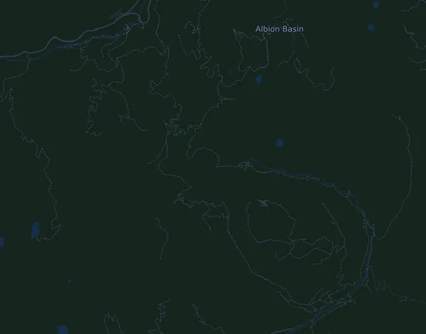

Speedgoat Mountain Races by UTMB – 50K
- Distance
- 50,5 km
- Højdemeter
- ↑ 3.689 m
- Højeste punkt
- 3.371 m o.h.
- Underlag
- Terræn og sti
- Karakter
- Bjergrig
- Start
- kl. 06:30
- Væskedepoter
- 8
Højdeprofil
Forbered dig med Mila
Mila er en løbecoach i en app. Lægger du et løb ind i din plan, planlægger coachen ugerne frem til start efter din form og giver dig en tidsprognose og en plan for tempo, væske og energi på ruten.

Den rette træning. Den rette dag.
Ruten

Om ruten
Speedgoat Mountain Races by UTMB – 50K er et trailløb på 50,5 km i Snowbird, USA. Ruten har 3.689 højdemeter stigning og 3.690 højdemeter fald, 73 m pr. km, og regnes dermed som bjergrig. Det højeste punkt ligger 3.371 m o.h. og det laveste 2.313 m o.h.
Den største stigning begynder ved km 23,8: 761 højdemeter på 5,6 km med 13,6 % i snit, op til 3.079 m o.h. I alt har ruten 15 stigninger på mindst 25 højdemeter; den sidste begynder ved km 46,7.
Arrangøren har 8 væskedepoter langs ruten, det første ved km 6,9 og det sidste ved km 49,7.
I Mila-appen beskriver coachen ruten i detaljer på dit sprog og planlægger dit tempo og din energi til den.
Stigninger
| Begynder ved | Længde | Højdemeter | Hældning | Top (m o.h.) |
|---|---|---|---|---|
| km 1,1 | 1,5 km | 169 m | 10,9 % | 2.578 |
| km 4,0 | 360 m | 44 m | 12,3 % | 2.532 |
| km 4,4 | 1,3 km | 237 m | 18,7 % | 2.757 |
| km 6,7 | 910 m | 111 m | 12,3 % | 2.759 |
| km 8,0 | 2,5 km | 304 m | 12,4 % | 3.037 |
| km 11,2 | 1,9 km | 206 m | 11,0 % | 3.108 |
| km 13,1 | 1,8 km | 241 m | 13,6 % | 3.344 |
| km 17,1 | 530 m | 52 m | 9,9 % | 3.168 |
| km 23,8 | 5,6 km | 761 m | 13,6 % | 3.079 |
| km 30,5 | 640 m | 69 m | 10,9 % | 2.922 |
| km 31,6 | 1,6 km | 313 m | 19,2 % | 3.208 |
| km 33,6 | 680 m | 214 m | 31,5 % | 3.371 |
| km 37,6 | 2,3 km | 460 m | 20,0 % | 3.344 |
| km 43,5 | 760 m | 133 m | 17,4 % | 3.036 |
| km 46,7 | 450 m | 28 m | 6,3 % | 2.759 |
Før start
Væskedepoter
| Ved | Her er |
|---|---|
| km 6,9 | vand |
| km 15,4 | ikke oplyst |
| km 24,6 | ikke oplyst |
| km 29,9 | vand |
| km 32,3 | ikke oplyst |
| km 36,9 | ikke oplyst |
| km 41,2 | ikke oplyst |
| km 49,7 | vand |
Starttider
- kl. 06:30
Kilde: speedgoat.utmb.world, hentet 15. oktober 2026
Tempotabel
Speedgoat Mountain Races by UTMB – 50K på 4:15:00 – tid pr. km og mellemtider
5:03 pr. km · km 10: 50:29 · km 20: 1:40:58 · km 30: 2:31:27 · km 40: 3:21:56 · mål: 4:15:00
Speedgoat Mountain Races by UTMB – 50K på 5:00:00 – tid pr. km og mellemtider
5:56 pr. km · km 10: 59:24 · km 20: 1:58:47 · km 30: 2:58:11 · km 40: 3:57:35 · mål: 5:00:00
Speedgoat Mountain Races by UTMB – 50K på 6:00:00 – tid pr. km og mellemtider
7:08 pr. km · km 10: 1:11:16 · km 20: 2:22:33 · km 30: 3:33:49 · km 40: 4:45:06 · mål: 6:00:00
Speedgoat Mountain Races by UTMB – 50K på 6:45:00 – tid pr. km og mellemtider
8:01 pr. km · km 10: 1:20:11 · km 20: 2:40:22 · km 30: 4:00:33 · km 40: 5:20:44 · mål: 6:45:00
Tiderne forudsætter et jævnt tempo hele vejen. Det er ren regning, ingen prognose: på stigninger, i trængsel og ved væskedepoter svinger tempoet.
Ofte stillede spørgsmål
Hvornår løbes Speedgoat Mountain Races by UTMB – 50K?
Speedgoat Mountain Races by UTMB – 50K løbes lørdag den 24. juli 2027. Tjek dato og starttid hos arrangøren.
Hvornår starter Speedgoat Mountain Races by UTMB – 50K?
Ifølge arrangøren: kl. 06:30.
Hvor langt er Speedgoat Mountain Races by UTMB – 50K, og hvor mange højdemeter er der?
Løbet er 50,5 km langt med 3.689 højdemeter stigning og 3.690 højdemeter fald. Det højeste punkt ligger 3.371 m o.h.
Hvordan er ruten på Speedgoat Mountain Races by UTMB – 50K?
Ruten regnes som bjergrig, med 73 højdemeter pr. km i snit. Den har 15 stigninger på mindst 25 højdemeter; den største begynder ved km 23,8: 761 højdemeter på 5,6 km. Start og mål ligger samme sted. Underlaget er terræn og sti.
Er der væskedepoter på Speedgoat Mountain Races by UTMB – 50K?
Ja. Arrangøren har 8 væskedepoter: km 6,9 (vand); km 15,4; km 24,6; km 29,9 (vand); km 32,3; km 36,9; km 41,2; km 49,7 (vand).
Hvordan fordeler jeg farten på Speedgoat Mountain Races by UTMB – 50K?
Gå efter en jævn indsats frem for et jævnt tempo: lad farten falde på stigningerne, hent den igen, når det flader ud, og hold igen de første kilometer. De største stigninger begynder ved km 8,0, km 23,8, km 31,6 og km 37,6. I Mila får du en tempoplan til netop denne rute efter din egen form.
Flere løb som dette
Flere løb i nærheden
- Badwater 135 217 km19. juli 2027 · Badwater Basin, Death Valley, USA
- Hardrock Hundred Mile Endurance Run (Hardrock 100) 161 km9. juli 2027 · Silverton, Colorado, USA
- Falmouth Road Race 11,3 km15. august 2027 · Woods Hole, Falmouth, USA
- Leadville Trail 100 Run 160,5 km21. august 2027 · Leadville, Colorado, USA
- Western States 100-Mile Endurance Run 161 km26. juni 2027 · Olympic Valley, USA
- BOLDERBoulder 10K31. maj 2027 · Boulder, Colorado, USA
Forbered dig med Mila
Den rette træning. Den rette dag.
Oplysningerne kommer fra rutefilen og arrangørens information. Tjek dato, starttider og regler hos arrangøren.
Mila er ikke tilknyttet, sponsoreret af eller godkendt af arrangøren eller løbets sponsorer. Navne og varemærker tilhører deres ejere. Arrangør eller rettighedshaver? Bed om ændring eller fjernelse